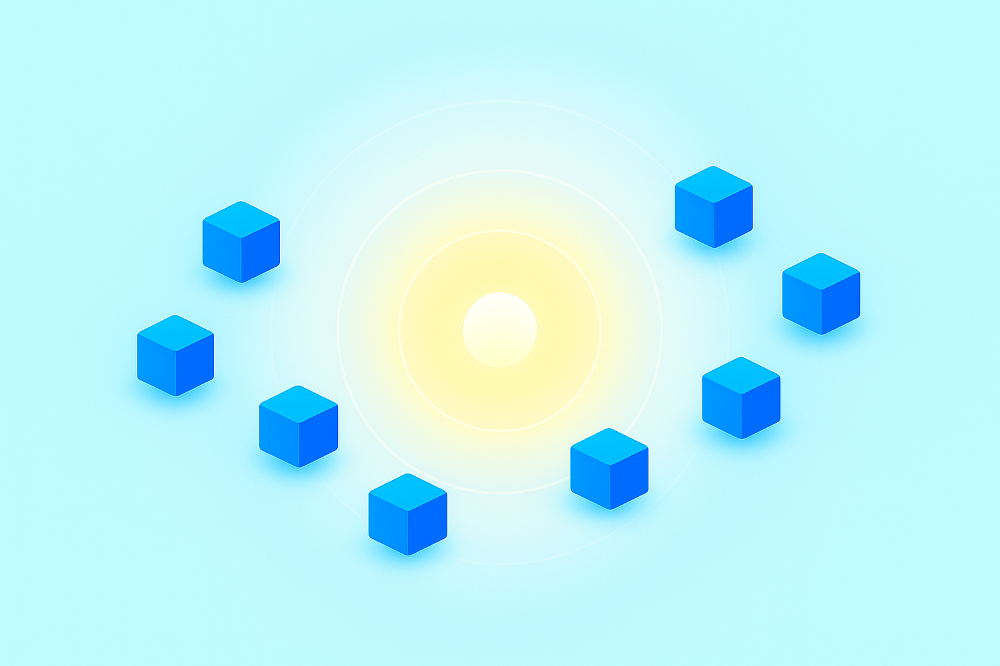
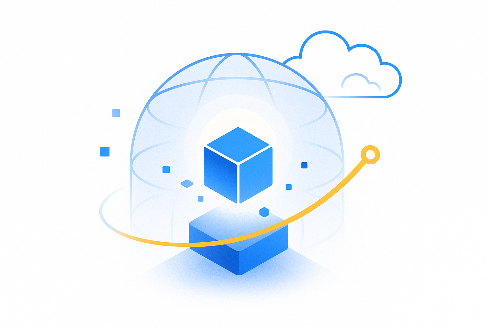
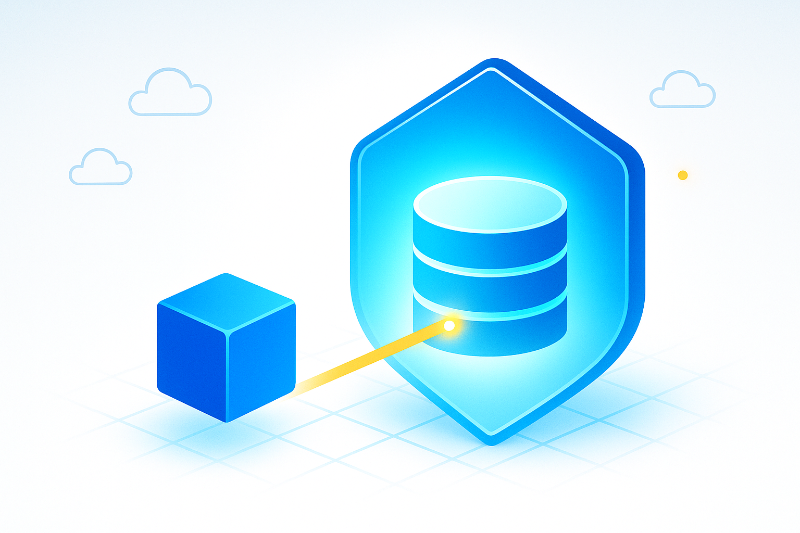
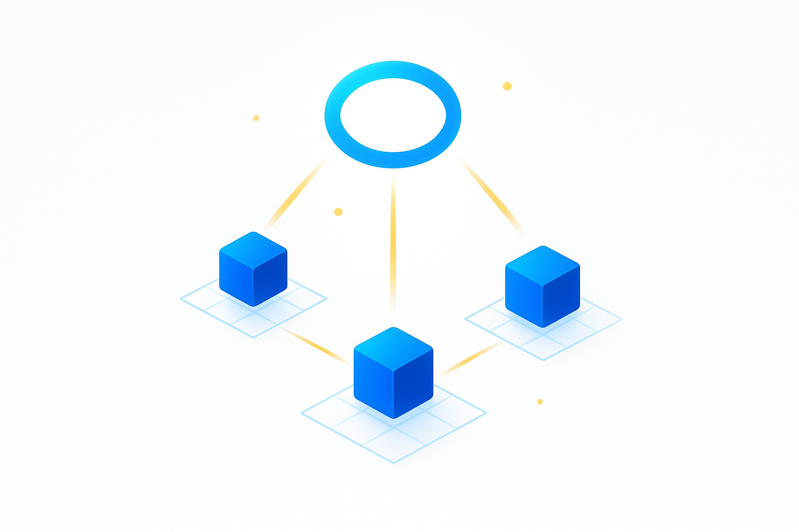
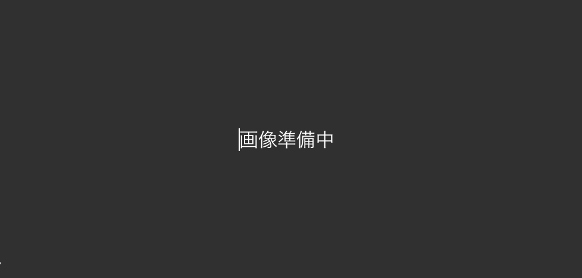

はじめに：勉強会の紹介
第1回：AWSの特徴とアカウント作成、EC2ハンズオン
(50%作成)第2回：VPC設計とEC2へのSSH接続
(作成中)第3回：IAMによるアクセス管理、RDSによるDB構築と接続
(未作成)第4回：スケーラブル構成とモニタリングの基本
(未作成)第5回：コンテンツ配信
(未作成)第6回：Dockerコンテナの理解と使い方
(未作成)第7回：ECSによるコンテナ運用の基礎
(未作成)第8回：サーバーレスAPIの作成
(未作成)第9回：非同期処理とイベント駆動設計
(未作成)振り返り：おわりに
(未作成)エキストラ：IaCによるインフラ自動化入門